Academic group project · Royal Danish Academy
REclaimed
REconfigured
REimagined
Storing, processing and reassembling Denmark’s architecture.
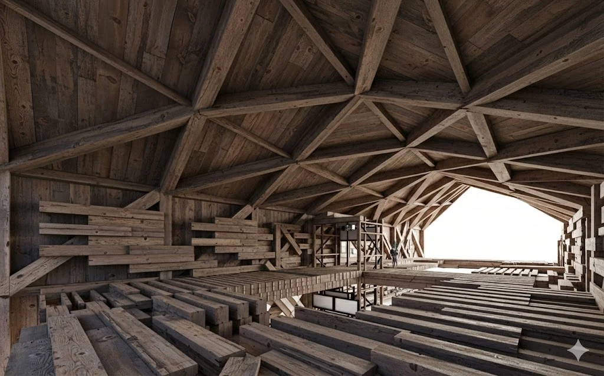
What if a building could store reclaimed materials by becoming an assembly of them? REclaimed REconfigured REimagined proposes a facility for receiving, processing and redistributing recovered building components. Rather than leaving these materials in an inactive stockpile, the project explores how they can form frames, interior spaces and façades while awaiting their next use.
The architecture is therefore designed around change. As material arrives, it can be assembled into the building; as it leaves, parts of the building can be reconfigured. Storage becomes an architectural task, linking the uncertain supply of reclaimed stock to fabrication, structural design and public space.
Storage as architecture
A building shaped by material inflow and outflow
The research asks how several storage methods can work together as a dynamic architectural system, particularly for reclaimed timber. A conventional warehouse separates the stored object from the building that contains it. This proposal brings those two roles into contact: material is held temporarily, but it also helps define the space.
That ambition introduces an important distinction between the building’s “bones”—its supporting frame—and its “skin”, the changing assemblies that organise and enclose space. The design must accommodate both abundance and scarcity, rather than depend on a permanently full inventory.
- Aggregation
- Connect discrete timber members into storage assemblies that make interior space.
- Reconfiguration
- Redistribute recovered beams into a supporting frame, informed by structural analysis.
- Layering
- Hold tiles, bricks and panels in systems that also form the building’s envelope.
Working with the site
Vermlandsgade recycling station
The project takes the existing recycling station at Vermlandsgade as its setting. The site is already organised around collection, sorting and vehicle access. These movements become the starting point for a new facility, connecting the arrival of discarded components to their preparation for reuse.
The proposal combines a public recycling and showroom programme with a more controlled production area. Visitors can encounter the material and its possible uses, while sorting, robotic processing and shipping retain their own working spaces and circulation.
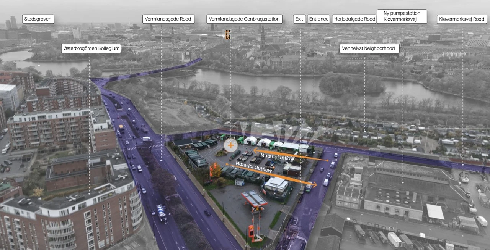
From donor buildings to stock
Understanding what can be recovered
Three donor-building studies establish the material basis: a mink-farm building in Jutland, houses in Odense and a building in Christiania. Their different structural arrangements yield different collections of beams and other components. Reuse begins by reading each building as a source of parts, not simply as a volume of demolition waste.
The inventory records dimensions and distinguishes timber with steel interventions, screws and chipped paint. Lengths are grouped into short, medium and long members: below one metre, between one and five metres, and above five metres. These are practical sorting categories, not a claim of certified structural grading. They make the available stock comparable while keeping its condition and origin visible.
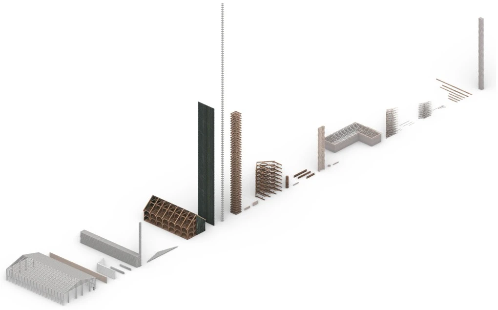
A facility for circulation
Sorting, making, storing and redistributing
The programme translates the material cycle into a sequence of spaces. Incoming stock reaches sorting and processing areas, then moves through a wood workshop, robotic milling and assembly. A material lift and catwalk connect handling at different levels. The showroom and offices occupy a connected volume, giving the public-facing and production programmes distinct but related places.
Storage sits within this sequence rather than at its end. Components can enter temporary assemblies, remain accessible, and later leave as reusable building parts. The facility is conceived as an intermediary between a donor building and the next construction project.
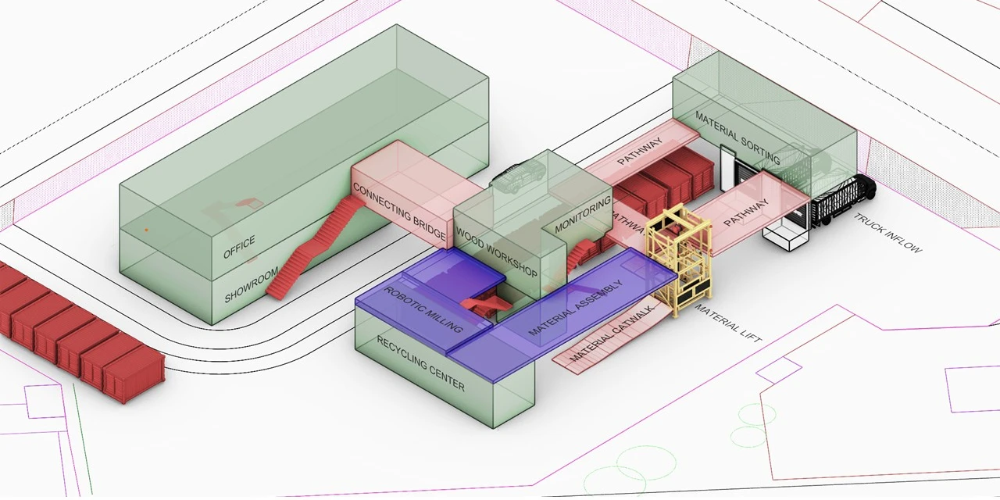
Aggregation
Giving variable timber a shared connection logic
Aggregation explores how individual reclaimed members can become larger spatial assemblies. The challenge is to work with variable stock while keeping the connections predictable. Parametric beam models describe the position of grooves and keys, allowing different member lengths to participate in a common assembly system.
The joinery studies use dovetail grooves and separate keys, including a split butterfly-wedge connection. Different groove arrangements allow crossing, angled and extended relationships between members. The connection becomes the repeatable element; the timber does not need to become visually or dimensionally identical.
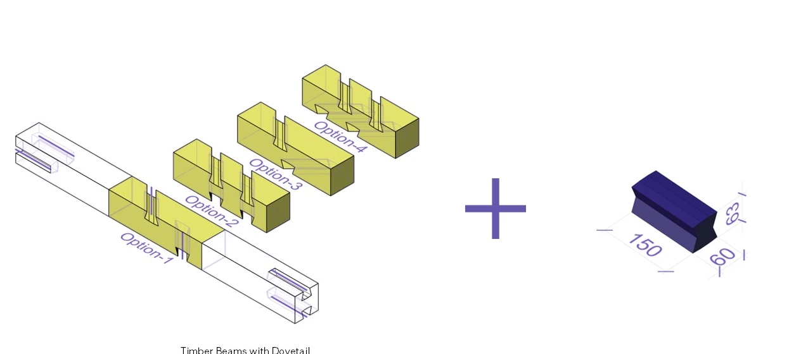
From model to material
Robotic milling and connection prototypes
The connection logic is tested in recovered timber through robotic milling and physical assembly. Freshly cut grooves meet surfaces that still carry the marks of previous use. This is a targeted intervention in an existing member, concentrating fabrication at the points needed for a new connection.
The prototypes demonstrate several member relationships, including a cross and an inclined assembly. They bring the digital rules back to material questions of fit, access and assembly order. These tests support the proposed construction method; they are distinct from the full-scale architectural speculation.
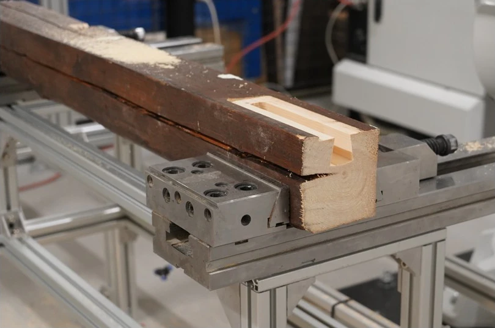
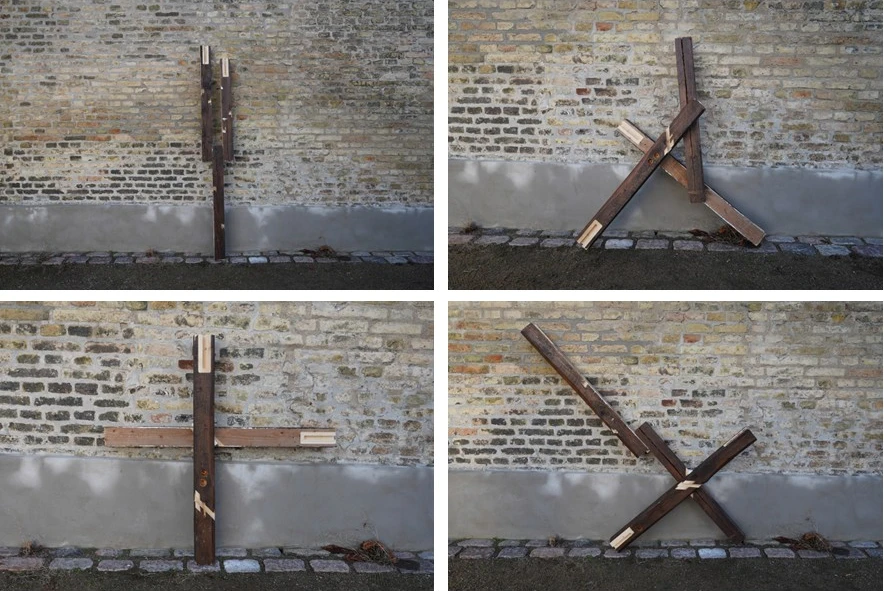
Reconfiguration
Matching a supporting frame to available material
Alongside the changing storage assemblies, the project investigates how recovered beams can form the building’s supporting structure. This shifts the question from how pieces connect locally to how a frame spans, carries loads and uses material across the whole building.
The computational study links parametric modelling in Rhino and Grasshopper with structural analysis in Karamba3D and optimisation in Opossum. Roof shape and beam cross-sections are explored through mass and displacement criteria, with utilisation helping reveal where material is doing more or less work. The resulting frame and material-allocation studies explore differentiated member sizes rather than repeating one section everywhere.
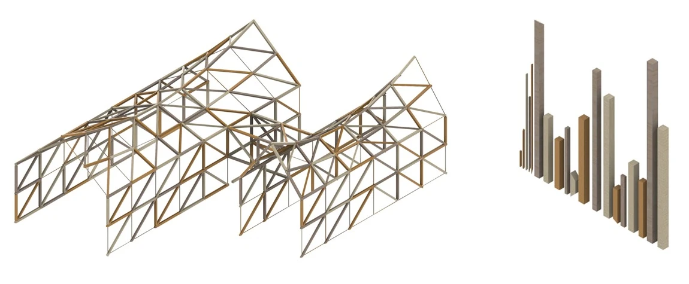
Layering
The envelope as a material store
The storage idea extends beyond timber. Façade studies investigate how recovered bricks, roof tiles, timber and steel panels can occupy layered supporting systems. These materials are not treated only as a finished surface: the way they are held must also allow for changes in the stock.
The tile study makes the dual role particularly clear. A tiled outer face is paired with shelving for stacked tiles behind it. Brick and panel systems explore related relationships between storage, enclosure and openings. As quantities change, so can the density and composition of the façade.
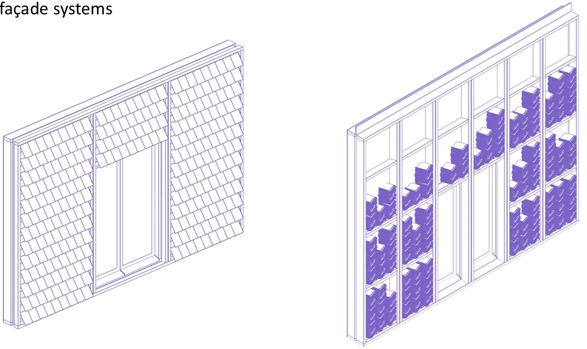
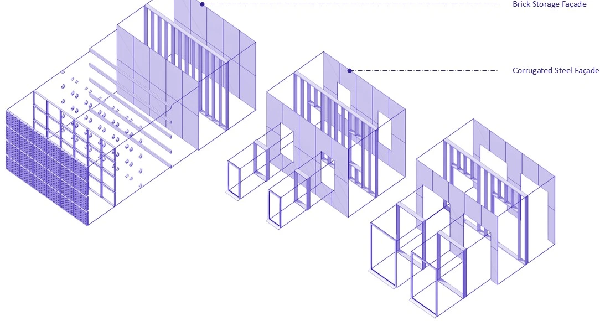
Inhabiting the inventory
Production hall and aggregation showroom
The architectural proposal brings the three strategies together. Its connected volumes accommodate production and a showroom, with the supporting roof frames enclosing a much denser world of stored and assembled material. A section through the scheme reveals the relationship between robotic workspaces, circulation, storage and the public interior.
In the showroom, the stock is encountered at the scale of the body. Beams overhead and around the visitor create thresholds, edges and passages. The space demonstrates possible assemblies while remaining a place from which material can be retrieved: it is a working inventory, not a permanent display of a single finished configuration.
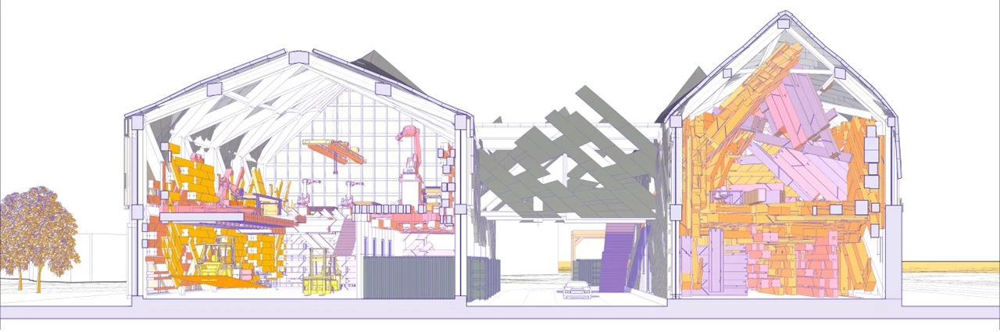
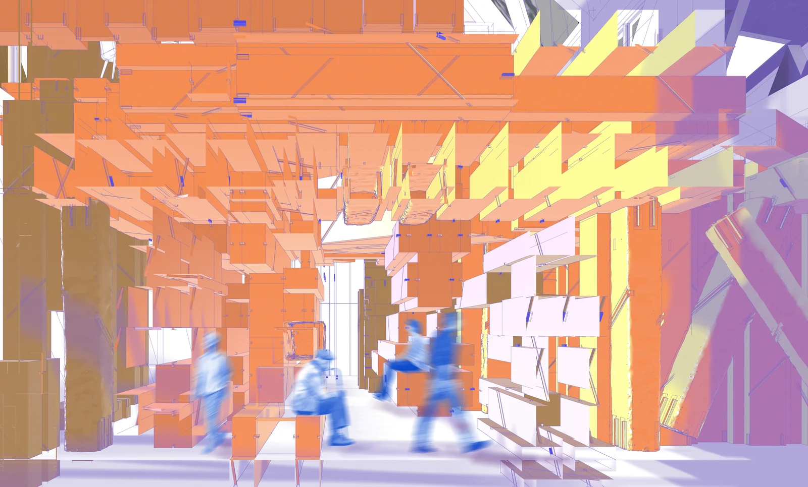
Abundance and scarcity
Designing for more than one moment
The project is not resolved in one final image. Its changing showroom studies explore what happens as material accumulates or is removed. A fuller inventory produces denser assemblies; a reduced inventory opens the space. Both conditions belong to the design, because outflow is a sign that material is returning to use elsewhere.
This makes time a design parameter. The task is to define relationships that can be revised as stock changes, rather than fix every member in one permanent location. The animation presents this as an architectural scenario, not as a live inventory-management system.
Reflection and next steps
From storing objects to designing their next use
REclaimed REconfigured REimagined treats the interval between demolition and reuse as an opportunity for architecture. Donor-building research, connection prototypes, computational studies and the facility proposal together suggest how storage can preserve material while making it useful in the present.
The next question is how to manage this change in practice. The project’s concluding speculation considers live feedback, simulation and augmented reality to inform retrieval, reuse and assembly sequencing. These remain future directions: the work presented here establishes the architectural and material logic from which such a system could develop.